Prompt-Chevron und blinkender Block-Cursor in Gelb.
Term als SVG ↗Alternative / Designstudie 03
ANSI
Block░▒▓
Die Icons sind selbst ANSI-Art: jedes Pixel sitzt auf einem 32 × 32-Raster, jede Farbe stammt aus der klassischen 16-Farben-VGA-Palette. Gestufte Ecken, ein Lichtband oben, ░▒-Schattierung unten und der typische schwarze Schlagschatten – so, wie man es in einem BBS-Menü malen würde.
Collection / Fünf Programme32 × 32 Raster · SVG 256 × 256
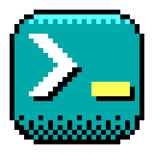
Cyan / Verbindung
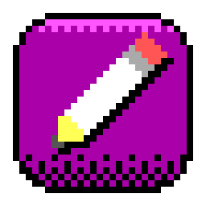
Magenta / Kreation
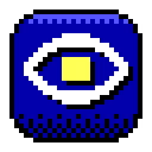
Blau / Entdeckung
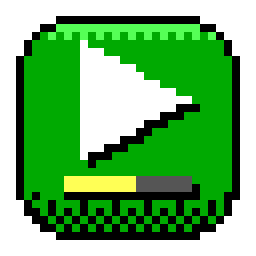
Grün / Bewegung
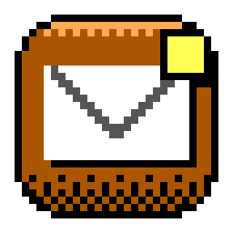
Braun / Austausch
Fünf Zeichen, ein gelber Funke.

Bleistift mit Radiergummi, Zwinge und gelbem Holzkonus.
Draw als SVG ↗
Ein Auge mit quadratischer Pixel-Pupille.
View als SVG ↗
Play-Dreieck über einem Fortschrittsbalken für Animationen.
Play als SVG ↗
Briefumschlag mit Lasche und gelbem Neu-Badge.
Mail als SVG ↗
Die Regeln der Familie.
Nur 16 FarbenKachel in der dunklen VGA-Farbe, Lichtband in der hellen Variante.
Weiß + GelbSymbole sind weiß; genau ein gelber Akzent markiert das Wesentliche.
Harter SchattenEin Pixel versetzter schwarzer Schatten, wie bei ANSI-Logos.
░▒ statt VerlaufSchattierung entsteht aus Rastermustern, nicht aus weichen Verläufen.
Kontrast und Maßstab.
Heller Desktop · 48 px
Dunkler Desktop · 32 px
Größenprobe · Icy Term
16
24
32
48
64
Alle drei Vorschläge im Vergleich.
Gleiche fünf Tools, gleiche Symbolidee – drei unterschiedliche Markencharaktere. Alle drei Sätze sind unverändert gesichert.
01 · Faceted Ice
Modern und hell, farbige Eisflächen mit Lichtfacette. Am nächsten an heutigen Desktop-Icons.
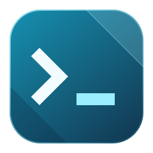
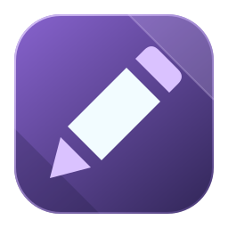
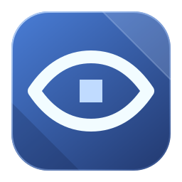
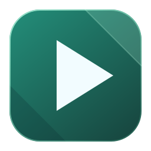
02 · Pixel Signal
Dunkles Monitorgehäuse, Neon-Akzente. Retro-Stimmung, aber mit glatter Vektoranmutung.
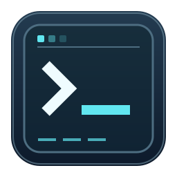
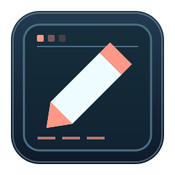
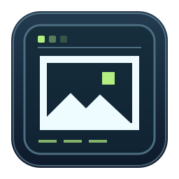
03 · ANSI Block
Echte Pixel-Art in der VGA-Palette. Am lautesten und am nächsten an der ANSI-Szene selbst.